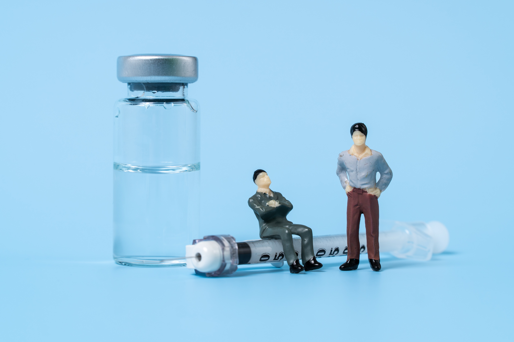

HOME
HOME
A Complete List of Diabetes Medications
Medications
The main medication for managing type 1 diabetes is the hormone insulin. Some people with type 2 diabetes may also need to take it.
Insulin:

People with type 1 diabetes must take insulin as their pancreas does not produce it. Supplementary insulin helps the cells in the body to absorb glucose and use energy.
A person with type 1 diabetes will need to receive insulin at several points throughout the day. Some doses of insulin will occur before or after a meal.